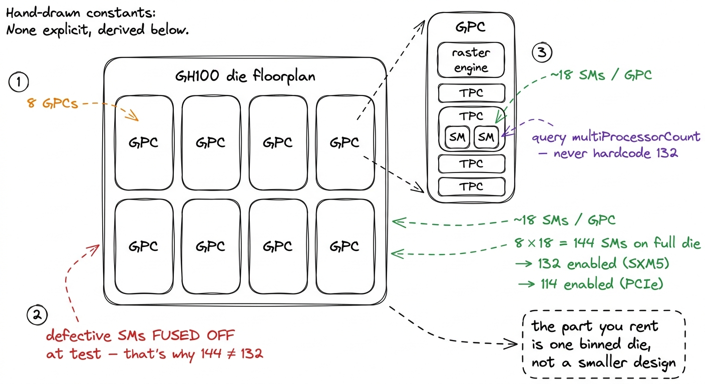
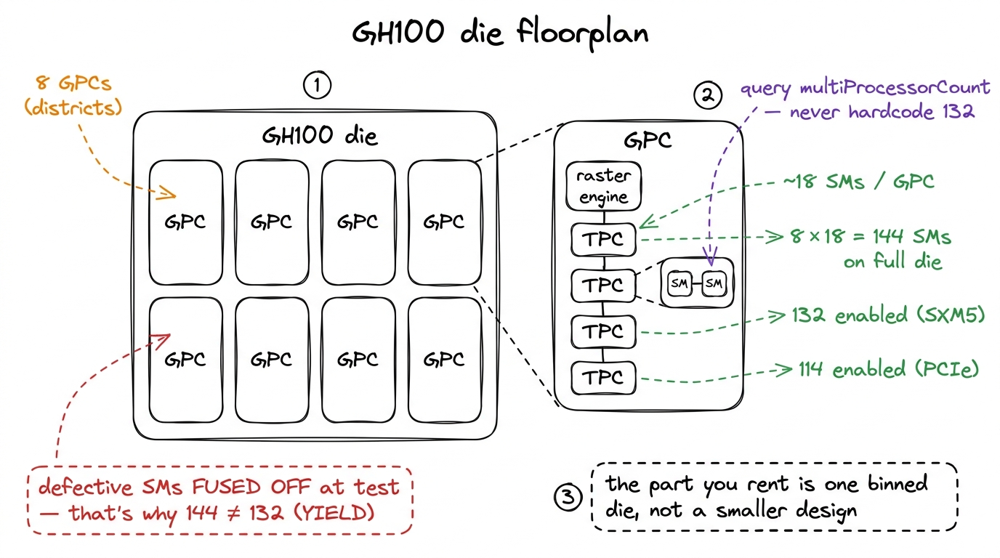
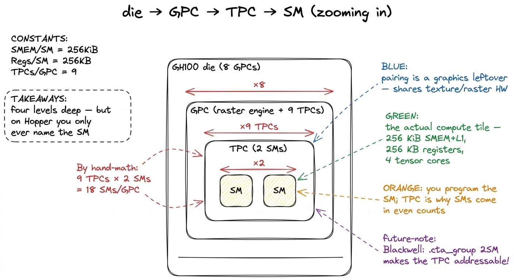
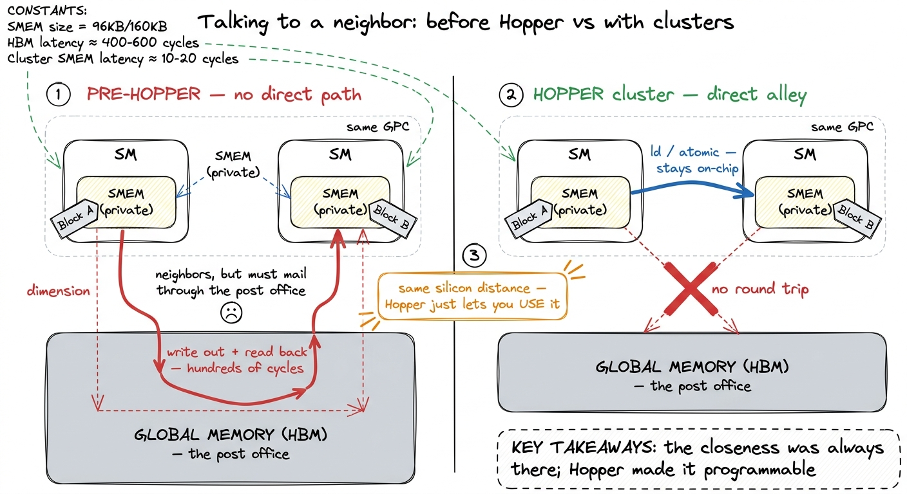

GPCs, TPCs & the chip floorplan GPC
Before you can reason about a single kernel, you have to know what you are running it on — and "an H100" is not an answer, it is a marketing name. The chip underneath has a floorplan: a physical arrangement of compute tiles on silicon, with a scheduling hierarchy bolted on top that your grid launches quietly inherit whether you ask for it or not. This article is the map. We are going to walk from the whole die down to the Streaming Multiprocessor (SM), name every box on the way, and — because this is Hopper — find one genuinely new rung on the ladder that most people skip: the thread-block cluster, which lets blocks on different SMs share memory.
I want the map first because almost every performance decision later in the course is really a decision about where on this floorplan your data lives and which tiles can see it. Coalescing is about the memory controllers at the bottom. Occupancy is about how many blocks fit on one SM. And distributed shared memory — the thing we build toward here — is about which SMs are close enough on the die to talk directly. You cannot exploit locality you cannot name.
The die, top-down
Start at the top. A full GH100 die — the silicon that becomes an H100 — is organized into 8 GPCs. A GPC (Graphics Processing Cluster, though NVIDIA now quietly expands it to GPU Processing Cluster since almost nobody runs graphics on these) is the largest repeating tile on the chip. Each GPC holds ~18 SMs, which gives the full die its headline figure: 8 × 18 = 144 SMs.
Except you have never run a kernel on 144 SMs, because that part does not ship. The chip you actually rent has 132 SMs on the SXM5 module, or 114 on the PCIe card.1 The SXM5 is the mezzanine/OAM module you find in an HGX baseboard with NVLink; the PCIe card is the slot-in variant. Fewer enabled SMs is only one of the differences — the PCIe part also clocks lower and has a smaller power budget, which is why it is not simply "132 minus some." Those aren't different designs. They are the same 144-SM die with some SMs switched off.
The reason is yield. An SM is a large, dense block of logic, and across a wafer some fraction of them come out with a defect — a stuck transistor, a bad SRAM cell. If NVIDIA required all 144 to be perfect, a single faulty SM would throw away the entire ~800 mm² die, and the price of an H100 would be a lot worse than it already is. So instead the defective (or partially defective) SMs are fused off — permanently disabled with an on-chip fuse at manufacturing test — and the chip is binned and sold with a guaranteed-good count. 132 is the number they can hit at volume with margin.2 This is why you should never hardcode 132 in a kernel. Query cudaDeviceProp::multiProcessorCount at runtime. The same CUDA binary might land on a 132-SM SXM5, a 114-SM PCIe H100, or a partially-fused H800 export part, and a grid sized to the wrong SM count leaves whole tiles idle.

figure rendering · The GH100 floorplan: 8 GPCs, ~18 SMs each, 144 on the die but 132/114The middle rung nobody talks about: the TPC
Between the GPC and the SM there is one more box, and it is the one people forget: the TPC (Texture Processing Cluster). A GPC is not a flat bag of 18 SMs — it is a raster engine plus a set of TPCs, and each TPC is a small pod of 2 SMs. So the true hierarchy is four levels deep: die → GPC → TPC → SM, with 18 SMs per GPC arriving as 9 TPCs of 2 SMs each.
For a pure compute programmer the TPC is mostly a historical artifact — the name gives away that this pairing exists to share fixed-function texture and raster hardware from the graphics lineage, which your GEMM never touches. You will not write a tpcIdx; there is no such thing in the programming model. But the TPC is worth knowing for two honest reasons. First, it is why the SM count per GPC is even — SMs are physically packaged in pairs, so you get 18, not 17. Second, it is a reminder that the "compute GPU" is a graphics chip wearing a lab coat: the datacenter H100 still carries the raster engines and the TPC packaging, even though almost every one of them will spend its entire life multiplying matrices.

figure rendering · The four-level hierarchy. The TPC is the pod of two SMs you never addrWhy the floorplan is suddenly programmable: thread-block clusters
For every generation before Hopper, this hierarchy was invisible to you above the SM. You wrote a grid of thread blocks; the hardware scheduler sprayed those blocks across whatever SMs were free, in no order you could rely on; and a block's shared memory was private to its one SM. Two blocks might land on adjacent SMs inside the same TPC, physically millimeters apart on the die, and still be unable to exchange a single byte except by making a round trip all the way out to global memory. The GPC was a fact of the silicon that your program was structurally forbidden from using.
Hopper (compute capability 9.0, targeted as sm_90a) changes that with the thread-block cluster. A cluster is a new, optional level of the launch hierarchy that sits between the grid and the block: you declare that some group of thread blocks — up to 16 of them — form a cluster, and the runtime guarantees that all blocks of one cluster are co-scheduled onto the same GPC.3 The guarantee is exactly analogous to the one you already rely on one level down: the threads of a block are guaranteed to share one SM. A cluster extends that promise up a level — its blocks share one GPC. The portable maximum is 8 blocks per cluster; larger sizes up to 16 are supported but non-portable and must be opted into. That single scheduling promise is what makes the GPC addressable for the first time.
Here is the launch, expressed as a compile-time cluster attribute on the kernel:
// A 2x2 = 4-block cluster. All 4 blocks are guaranteed
// to co-reside on ONE GPC, so they can share memory directly.
__global__ void __cluster_dims__(2, 2, 1)
gemm_cluster(const float* A, const float* B, float* C) {
namespace cg = cooperative_groups;
cg::cluster_group cluster = cg::this_cluster();
// this block's coordinates *within* the cluster:
unsigned int rank = cluster.block_rank();
// ... map a large output tile across the whole cluster ...
cluster.sync(); // barrier across all blocks in the GPC
}Distributed shared memory: reading another SM's SMEM
The payoff of that co-scheduling guarantee is DSMEM (Distributed Shared Memory). Once your blocks are pinned to one GPC, Hopper exposes the shared-memory windows of every SM in the cluster as one contiguous, cluster-wide address space. A thread in block 0 can issue a load or an atomicAdd whose address resolves into the shared memory physically owned by block 3's SM, and the hardware routes it over a dedicated SM-to-SM network inside the GPC — never touching L2 or HBM.
This is the first time on-chip storage stops being strictly per-SM. Recall from the memory hierarchy that each SM has up to 228 KiB usable as shared memory out of its 256 KiB SMEM+L1.4 Those 228 KiB are the usable-as-SMEM cap, opted into with cudaFuncAttributePreferredSharedMemoryCarveout; the block still shares that pool with the L1 cache, and the exact ceiling shifts slightly by architecture. The rest of the 256 KiB stays as L1/texture. With a cluster of, say, 8 blocks, a single collective can now reach across roughly 8 × 228 KiB ≈ 1.8 MiB of shared memory as one logical scratchpad — a working set an order of magnitude larger than any one SM can hold, at latency far closer to SMEM than to L2.

figure rendering · Thread-block clusters unlock DSMEM: shared memory of every SM in a GPCWhere this sits in the memory story
It helps to place DSMEM on the ladder we already know. Working outward from a thread you have registers, then per-SM shared memory (~1 cycle-ish, tens of KiB), then — new in Hopper — the shared memory of your cluster's other SMs over the SM-to-SM fabric, then the shared ~50 MiB L2 with its two partitions and crossbar, and finally HBM3 at 3.35 TB/s but hundreds of cycles away. DSMEM slots into a gap that simply did not exist before: bigger than one SM's scratchpad, dramatically faster and lower-energy than bouncing through L2 or HBM. For the algorithms that care — large GEMM tiles, and especially the producer/consumer pipelines that stream operands via TMA (Tensor Memory Accelerator) into a shared staging area — that new tier is exactly the missing piece.

figure rendering · The tier DSMEM adds. It is faster and larger-reaching than any singleThe number, and the honest caveat
So what does the floorplan actually buy you in throughput? The headline is not a percentage-of-cuBLAS here — clusters are a structural capability, not a single kernel step — but the number worth carrying is the reach: a cluster turns 228 KiB of private scratchpad into a shared working set approaching ~1.8 MiB across a full 8-block cluster, with no HBM round-trip. In the GEMM ladder we will climb elsewhere, the top rungs — the ones that carry us from the mid-80s into the low-90s % of cuBLAS and beyond — lean on exactly this kind of GPC-scale cooperation to keep the tensor cores fed. cuBLAS itself is a heavy user of cluster launches on Hopper for precisely that reason.
The honest caveat is that none of this is free or automatic. A cluster launch can fail if the requested block count cannot be co-scheduled on one GPC given current occupancy — you must query the maximum with cudaOccupancyMaxActiveClusters and be ready to fall back. Cluster sizes above 8 are non-portable. And DSMEM only helps if your algorithm actually has cross-block reuse to exploit; bolt it onto a kernel with none and you have added synchronization for nothing. The floorplan is now programmable, but it still demands you know your data movement cold.
That is the map. We know the die is 8 GPCs of 9 TPCs of 2 SMs, that the 132 we run on is a binned 144, and that Hopper finally let a group of blocks treat one GPC as a shared neighborhood. Next we drop inside a single SM — the four processing blocks, the warp scheduler, the tensor cores, and the register file — because everything above the SM only matters once you know what one SM can do in a cycle.